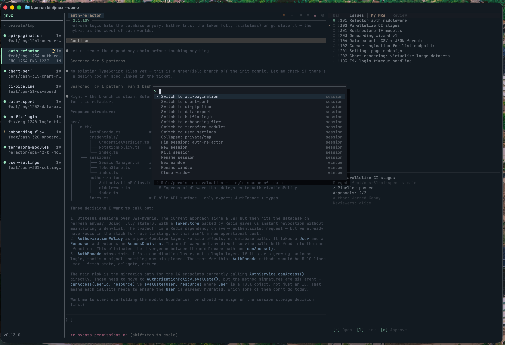
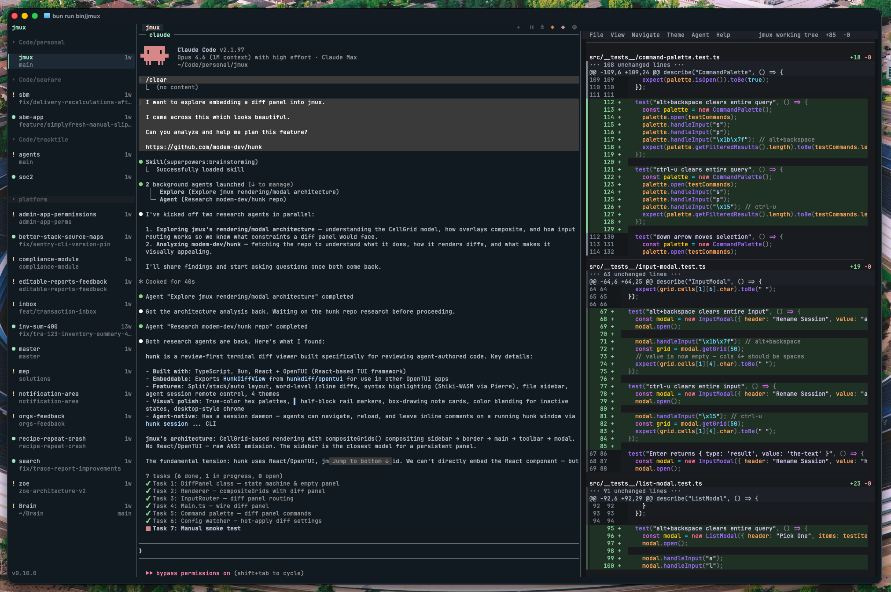
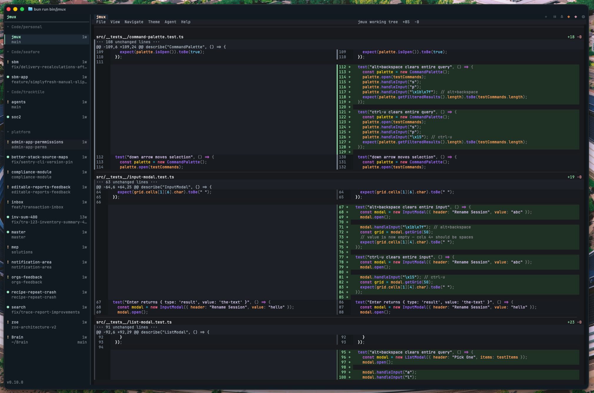
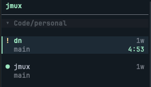

Terminal Agent Orchestrator
Agent IDEs ship their own terminal, diff viewer, and worktree manager — then lock you in. jmux orchestrates tmux, hunk, wtm, and whatever else you already use. Your tools stay your tools.
Why jmux
Agent IDEs bundle their own diff panel. jmux integrates hunk — syntax-highlighted, word-level, split and full-screen views. Built by people who only build diff viewers.
jmux doesn't invent its own branching model. It uses wtm and git worktrees — one branch per agent, one session per branch. If you stop using jmux, the branches are still there.
Your theme, your keybinds, your plugins, your ~/.tmux.conf. jmux runs in any terminal you already have — local, SSH, containers, devboxes. No Electron shell. No proprietary runtime. If it runs tmux, it runs jmux.
How it Compares
| jmux | Bundled Agent IDEs | Raw tmux | |
|---|---|---|---|
| Parallel agent orchestration | ✓ | ✓ | Manual |
| Agent status & attention flags | ✓ | ✓ | ✗ |
| Integrated diff review | ✓ | ✓ | ✗ |
| Cache cost visibility | ✓ | ✗ | ✗ |
| Runs over SSH / headless | ✓ | ✗ | ✓ |
| Use any editor or tool | ✓ | Bundled | ✓ |
| Works with any terminal agent | ✓ | Supported list | ✓ |
| Programmatic agent control | ✓ | Extension | ✗ |
| Sessions outlive the orchestrator | ✓ | ✗ | ✓ |
| Install size | ~0.3 MB | ~200+ MB | — |
Bundled agent IDEs — Orca, Cursor, Windsurf, Conductor — ship their own terminal, editor, and runtime in a desktop app.
Built for the Workflow
Every session at a glance — name, branch, status. Green dot for activity, orange flag when an agent needs review. Sessions auto-group by project.
Ctrl-Shift-Up/Down. No prefix, no menu, no mode. Or click the sidebar. Indicators clear only when you actually interact.
When Claude Code finishes a response, the orange ! appears. Switch to it, review the work, move on. One command to install hooks for any agent.
Works with your ~/.tmux.conf. Your plugins, your prefix key, your bindings. jmux doesn't replace your tools — it organizes them.
Keyboard-First
Ctrl-a p to open. Type to fuzzy-search sessions, windows, pane actions, and settings. Hit Enter to execute.
Switch sessions by name, split panes, zoom, change settings — all without memorizing keybindings.

Code Review
Ctrl-a g to toggle. Powered by hunk — a review-first terminal diff viewer with syntax highlighting, word-level diffs, and split/stack views. The diff panel docks to the right of your terminal so you can see exactly what each agent changed without leaving jmux.
Split mode for monitoring while agents work. Full-screen mode for thorough review. Switching sessions reloads the diff automatically.
Navigate with Shift-Right from your rightmost pane — the diff panel feels like another pane in your layout.


Agent Automation
jmux ctl gives agents and scripts a structured CLI to control the workspace. Dispatch Claude Code instances, monitor attention flags, capture pane output, send follow-ups.
Ships with an agent skill document — Claude Code agents running inside jmux automatically discover the control interface and can orchestrate sibling agents across sessions.
All output is structured JSON. Context resolution is automatic — agents inherit $TMUX and $TMUX_PANE from their environment.
Cost Visibility
Each session shows a live countdown to Claude's prompt cache expiry. Green above 3 minutes, yellow under 3, red under 30 seconds, dim at 0:00.
Sending a prompt to a warm session saves up to 90% on input tokens. jmux reads real cache data from Claude Code's OpenTelemetry telemetry — no setup required.

Ecosystem
The best terminal diff viewer
Powers jmux's integrated diff panel. Syntax-highlighted, word-level diffs with split and full-screen views. npm i -g hunkdiff
The best Git worktree manager
Powers jmux's worktree creation flow. One worktree per agent, one session per branch. Parallel agents on parallel branches.
The leading AI coding agent
Ships with a jmux-control agent skill so Claude discovers the control CLI automatically. Telemetry integration for cache timers and attention flags.
The best terminal Git UI
Run it in a jmux pane alongside your agent. Full Git workflow without leaving the terminal.
The standard GitHub & GitLab CLIs
PRs, issues, reviews. Everything stays in the terminal where you're already working.
More great coding agents
If it runs in a terminal, it works in jmux. Attention hooks for anything that can trigger a shell command.
Whatever you use
vim, emacs, VS Code, your shell, your scripts. jmux doesn't care. It's tmux underneath.
Requires Bun 1.2+ and tmux 3.2+.
~0.3 MB. Installs in under a second. jmux will install tmux for you if needed.